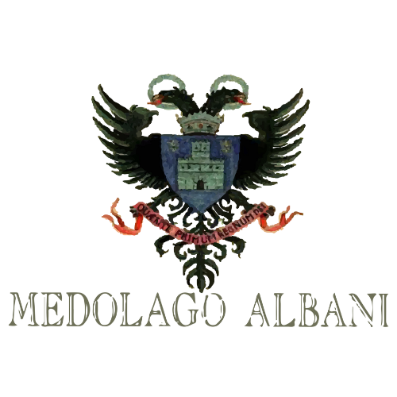
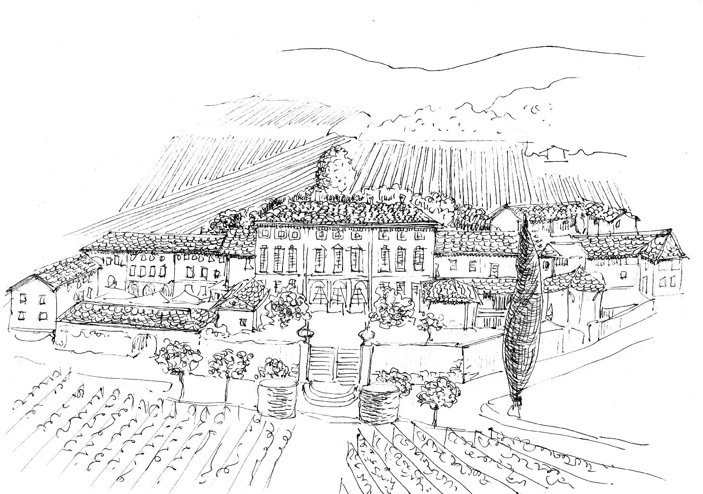
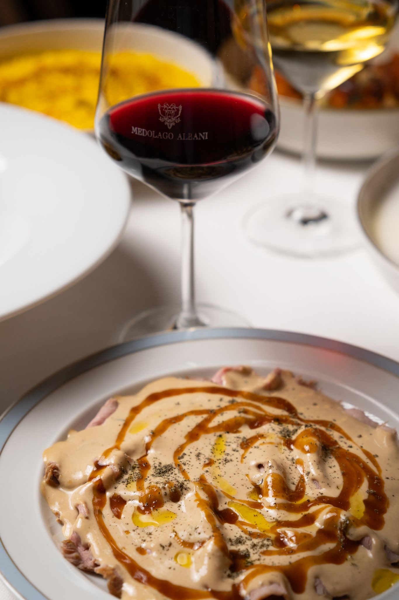
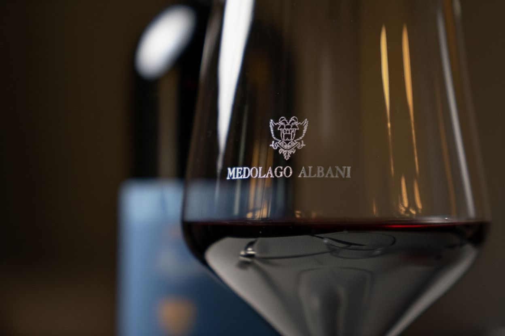

L'azienda vitivinicola Medolago Albani si trova sulle colline di Redona in Comune di Trescore Balneario in provincia di Bergamo.
I 30 ettari vitati hanno esposizione ottimale in una conca rivolta a mezzogiorno. I terreni calcareo-argillosi e l'ottimo micro-clima favoriscono da secoli la coltivazione della vite.
La nostra passione per i vini ci ha portato, inoltre, a conoscere anche le altre cantine e avere una selezione ricercata.
Carta vini

Cucina sincera, radici solide e un tocco contemporaneo.
Ogni proposta in tavola trova nel vino la sua voce complementare.
Il risotto alla milanese incontra la morbidezza di un Franciacorta; la tartare di Fassona si esalta con un Dolcetto; il vitello tonnato dialoga con un Arneis elegante; mentre il petto d'anatra al Nebbiolo celebra il perfetto equilibrio tra terra e frutto. Gli abbinamenti nascono dal confronto costante tra sala e cucina, per offrire un'esperienza armoniosa e completa.
Non solo degustazione, ma scoperta.
L'approccio del Sant'Eustorgio Milano è educativo e appassionato. Lo staff, formato direttamente dal titolare, conosce i vitigni, le annate e le tecniche di vinificazione, trasformando la scelta del vino in un momento di dialogo e condivisione. Ogni servizio diventa occasione per far conoscere le eccellenze enologiche italiane e valorizzare il legame tra cucina e territorio.
